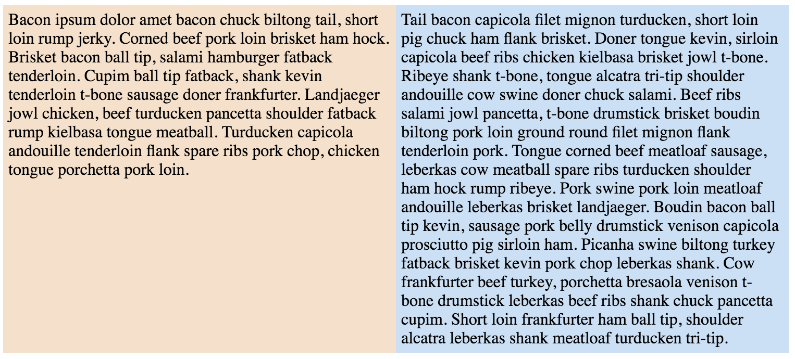

More CSS
sharpening the toolsSections in this chapter
Pseudo Elements
Where did you come from?!
You've already met pseudo classes. However, the pseudo elements do something we haven't yet seen - they add new elements to the document!
Say we have this p element:
<p>Eeexiiit <em>light!</em> Eeenteeer <em>niiiight!</em></p>
And we target it with this CSS:
p:before {
content: "♬ ";
}
p:after {
content: " ♫♩"
}
Then we get this output:
Note however that the notes don't actually come before and after the p element, but rather become the youngest and oldest children:
In other words, :before and :after are misleading names, they should have been called something else. Also there should be an actual before and after, but there isn't.
But still, the pseudo elements are a powerful tool when the moment is right.
Note that you don't have to use it for text content - we can also set display to block, add background images and all sort of shenanigans!
CSS Deluxe
bells and whistles
Although CSS has grown more powerful, there is still a lot to be desired.
- variables
- computations
- mixins
- nested declarations
This has driven many to try to add a layer on top of CSS. The two most popular solutions are SASS and LESS.

Read more at http://sass-lang.com/ and http://lesscss.org/.
The idea is that we write in a language that compiles down to regular CSS.
The LESS homepage shows this LESS code:
@base: #f938ab;
.box-shadow(@style, @c) when (iscolor(@c)) {
-webkit-box-shadow: @style @c;
box-shadow: @style @c;
}
.box-shadow(@style, @alpha: 50%) when (isnumber(@alpha)) {
.box-shadow(@style, rgba(0, 0, 0, @alpha));
}
.box {
color: saturate(@base, 5%);
border-color: lighten(@base, 30%);
div { .box-shadow(0 0 5px, 30%) }
}
...which compiles to this CSS:
.box {
color: #fe33ac;
border-color: #fdcdea;
}
.box div {
-webkit-box-shadow: 0 0 5px rgba(0, 0, 0, 0.3);
box-shadow: 0 0 5px rgba(0, 0, 0, 0.3);
}
Of course, using something like this means that we require a build step!
But as you will find, this is something that is regularly used in the web world, even though HTML, CSS and JS are all interpreted.
Why? Many reasons, three of which are:
- use preprocess languages for CSS or JS
- write in the latest tech, dumb it down for the browser
- minification (strip whitespace and comments)
Exercise - Build step
LESS is more
No surprise - we'll now integrate LESS into our game!
As we saw, this means that we now need a build step which compiles the LESS code into CSS.And the first step to install LESS is, perhaps surprisingly, to install Node!
More on Node, and installation instructions, here: https://nodejs.org/
We'll talk more about Node, which is a JavaScript runtime, later. Now we just need it to use npm, which is a package manager that runs in Node. LESS is distributed as such a package.

You can read more about npm here: https://www.npmjs.com/
LESS is installed as a global command. Once you have installed Node, open a terminal - it doesn't matter in which folder you are - and type:
npm install -g less
After that you now have access to the lessc command. You use it like this:
less path/to/styles.less wanted/output/path/styles.css
To integrate this in your project:
- Rename your
.cssfile to.less. CSS is valid LESS! - Read up on LESS and use some features in your file.
- Use
lesscto compile your code into.css!
Submit by adding, committing, pushing and make a PR as usual!
Challenge: Of course, having to remember to compile the .less file is tiresome. It is therefore common to set up an automagic compiler. Try your hand at this! There are many solutions,
one suggestion is to use this: https://github.com/jonycheung/deadsimple-less-watch-compiler.
Challenge: If you still have time and/or energy left over, try to find some use for pseudo elements in your app!
Transitions
Slowing things down
Normally, if a style property of an element changes value, the change is instantaneous.
For example, we apply this style...
#instantexample:hover {
transform: rotate(45deg);
}
...to this div, so try hovering over it!
This div is exactly the same as before, but with one additional rule:
#transitionexample {
transition: transform 1s ease;
}
Try hovering again!
As you probably figure, transitions are a really powerful way to do CSS-only animations, and well worth getting to know well.
Some notes;
- The full shorthand syntax is
transition: <property> <duration> <timing function> <delay> - We can transition more than one property by separating them with
,:transition: width 2s, height 2s - As with many new / experimental technologies some browsers might require vendor prefixes still:
-webkit-transition,-ms-transition, etc. Although the need is growing less and less frequent.
As per usual there are lots more detail on MDN:
Btw, the transform property that we used as a transition example is really powerful, and worthy of looking up for its own sake!
Animations
ACTUAL animations, that is!
With transitions we can do simple animations from one state to another.
But CSS also provides actual animations where we change between predefined frames!
Behold this beautiful example!
An animation consists of two parts. First we name the animation and define the keyframes, which contain property values to be reached at various points during the animation timeline. These values will transition from one point to the next.
The earlier animation was defined like this:
@keyframes looparound {
0% {
top: 0;
left: 0;
}
25% {
top: 0;
left: 470px;
}
50% {
top: 170px;
left: 470px;
}
75% {
top: 170px;
left: 0;
}
100% {
top: 0;
left: 0;
}
}
And our element then used the animation by specifying name, duration and repeats:
#animationexample > div {
animation-name: looparound;
animation-duration: 3s;
animation-iteration-count: infinite;
}
If we only want to go from one set of property values to another, then we might as well just use transitions.
But there are more than two frames involved we must use animations instead!
Exercise - Going overboard
Because more is always better
Our newfound knowledge leaves us no choice - we absolutely must add transitions and animations to our game!
Look your game over, and any place where you can cram movement, do it!
When you're done, add new files, commit, push and do a PR as per usual!
Challenge: For extra annoyment points, read up on transform and do some transition or transformation with that! I have it from good authority
that users LOVE when you use skew! Promise!
Order
let the race begin!
Question: So, styles can be defined in many different places. But, what happens when the same style is applied in different ways?
Answer: The browser follows a strict pecking order:

There were some things in there that we don't yet know about. First, !important - this is a keyword you can add to the end of a rule to bring it to the top of the pecking order.
.special {
background: yellow !important;
}
But as noted this is considered bad practice, just as inline styles are considered harmful.
So if we avoid those two...
...the primary order decider is specificity. But, what is that?
Specificity is the "weight" of the rule, which is calculated according to a formula. The gist;
#idselectors are the heaviest- then
.class,[attributes]and:pseudo - and finally type.
Say you have this style...
p:first-line {
margin-left: 2em;
}
...but you are also using an external CSS sheet which overrides your style.
Then you need to make your style more specific, often by prefixing it with ancestor specifications that you otherwise don't need:
body div#app-wrapper p:first-line {
margin-left: 2em;
}
A final note; since browser defaults can vary, it is common to use a reset sheet to be (more) sure that everything looks the same in different browsers.
An old but popular sheet is the one by CSS guru Eric Meyer which you can find here: http://meyerweb.com/eric/tools/css/reset/
Flexbox
solving the age-old riddle
There are two common problems that are embarrasingly hard to solve using regular CSS:
- centering things vertically
- having columns of equal height
CSS3 finally brought us a remedy: Flexbox!
The basic idea is simple; in this new display mode you select...
- opt in to the new display mode (
display: flex) - choose vertical or horisontal direction (
flex-direction) - how the content should be aligned along the direction axis (
justify-content) - and also perpendicular to the direction axis (
align-items)
There are some more flex properties, and also some for the children in a box, which gives you even more control.
This is hard to visualise from textual explanations, so try out an interactive tutorial here: http://blog.krawaller.se/flexboxdemo/
There are also two popular games that demonstrate the concept:
- Flexbox Froggy @ http://flexboxfroggy.com/
- Flexbox Defence @ http://www.flexboxdefense.com/
Remember how CSS selectors were so good at what they did that they leaked over into JS? It is the same with flexbox - it turned out to be such an efficient way to lay out things that it is used in many frameworks, most noteably by React Native.
Exercise - Faux columns
The holy grail
We mentioned columns of equal height before:

More specifically, we mean
- Two columns who both extend to the bottom of their parent
- The longest column desides the height of the parent
As previously stated, this is very difficult with regular CSS.
But, rather easy with Flexbox, which is what I used to create the screenshot!
And now, of course it is your turn to recreate the screenshot using HTML and CSS!
Some pointers;
- I got the text from http://baconipsum.com/
- The structure should just be a div with two divs inside
- You will need to play with
flexon the children - Experiment yourself first, but if you get stuck then go googling!
Challenge: If you're really serious about your webdev chops, find a way to steal my exact colours!